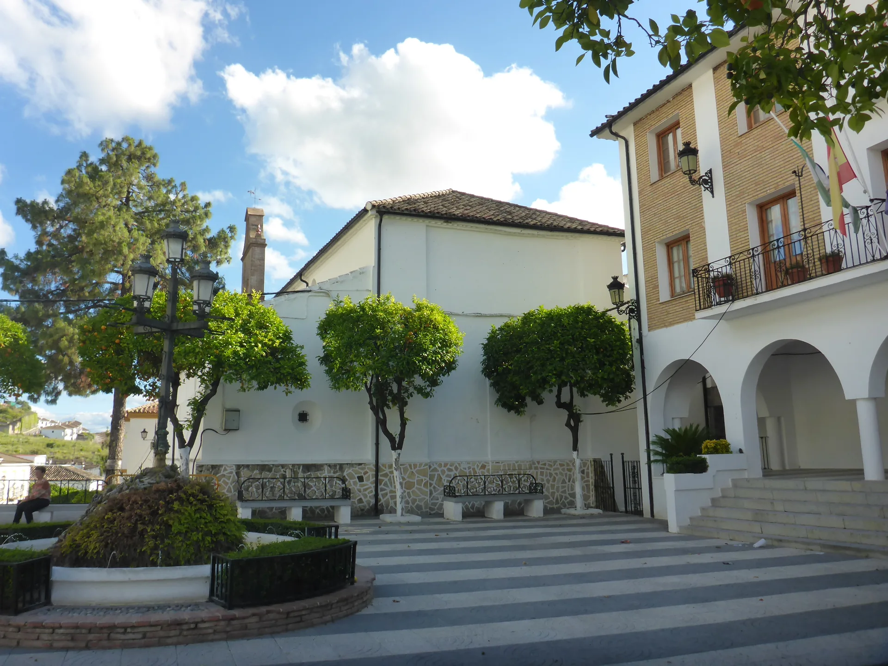
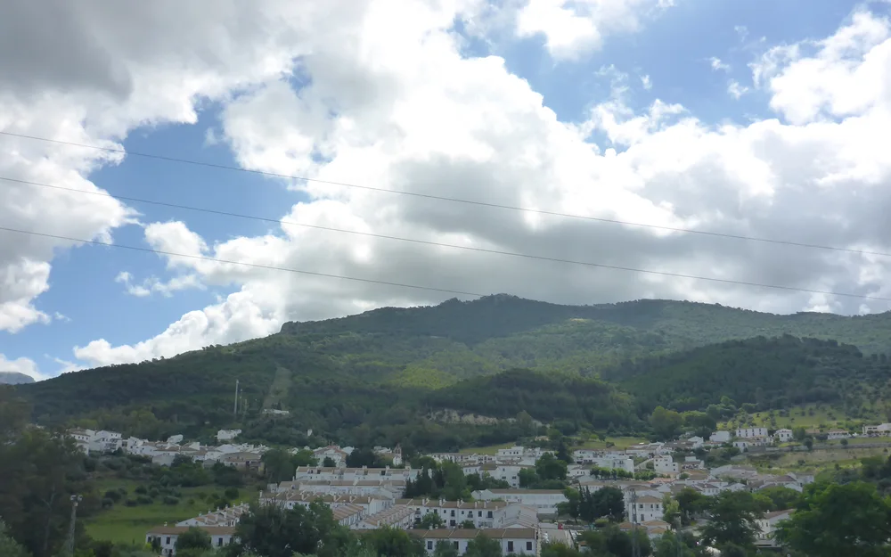
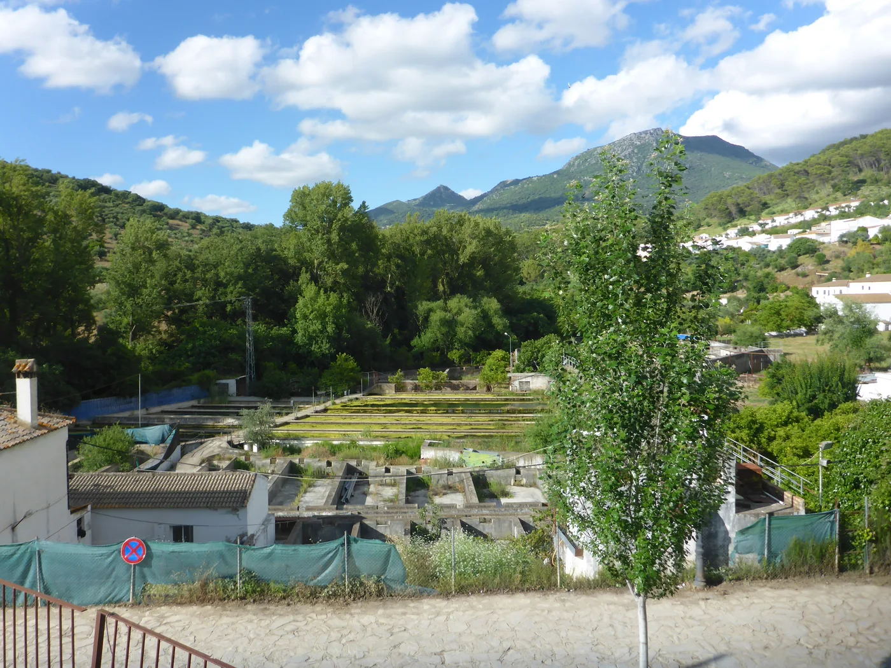

SUITE
Suite Deluxe
Para quienes buscan una opción con el baño dentro de la suite.
- Descanso
- 1 cama doble
- Baño
- Privado, en la suite
- Conexión
- Wi-Fi gratuito
STAY
COLLECTION

Habitaciones y suites en Calle Ronda, 26.
Ver dónde consultar las fotos realesMafloras Suites El Bosque ofrece alojamiento turístico en el pueblo de El Bosque, en la Sierra de Cádiz.
La elección empieza por el espacio que necesitas: una suite, una habitación doble con balcón o una opción individual. Compara sus diferencias antes de consultar tu estancia.
El tipo de baño y el uso de los espacios cambian según la opción. Aquí encontrarás esa información separada, para que puedas elegir con criterio.
Elige el alojamiento.
Consulta tus fechas.
Confirma los detalles.
Compara las opciones publicadas.
La disponibilidad se confirma para tus fechas.
3 opciones
SUITE
Para quienes buscan una opción con el baño dentro de la suite.
HABITACIÓN DOBLE
La alternativa doble publicada con balcón. Su baño es compartido.
HABITACIÓN INDIVIDUAL
Una habitación de uso privado con acceso a zonas compartidas, según el anuncio del anfitrión.
Las fichas de Booking y el anuncio de Airbnb describen estas opciones. Confirma ocupación, equipamiento y condiciones de la unidad concreta antes de reservar.
Qué conviene confirmarTambién aparecen referencias públicas a un apartamento de dos dormitorios y a una casa de tres dormitorios. Consulta directamente su oferta vigente y la modalidad de uso para tu grupo.
Consultar opciones para mi grupoLOS ESPACIOS
Consulta las imágenes de Mafloras Suites en Booking y las de la habitación individual en su anuncio de Airbnb. Comprueba qué fotos corresponden a la opción que te interesa.
Ver el alojamiento en BookingLas fotos de esta web muestran exclusivamente El Bosque. Las imágenes de las habitaciones no se reproducen sin permiso de sus titulares.
La Suite Deluxe figura con baño privado. La doble con balcón y la individual se anuncian con baño compartido.
El anuncio de la individual describe un patio o terraza de uso compartido. No implica una terraza privada para todas las opciones.
Pregunta por la climatización, cocina y espacios incluidos en tu unidad. El equipamiento anunciado para el conjunto puede variar entre alojamientos.
EL BOSQUE, CÁDIZ
En el entorno de la Sierra de Grazalema, El Bosque combina calles de casas blancas y naturaleza. Una ubicación para organizar tus propios planes por la Sierra de Cádiz.


El sendero enlaza El Bosque y Benamahoma junto al río. Consulta el estado del recorrido y los avisos oficiales antes de salir.
Información de espacios naturalesEn El Bosque, permite acercarse a la flora del parque natural y del sector rondeño. Comprueba horarios y condiciones de visita.
Preparar la visitaANTES DE VENIR
La información de cada reserva debe corresponder a tus fechas y al alojamiento elegido.
Consultar mi casoLas plataformas consultadas sitúan la entrada desde las 14:00 y la salida hasta las 11:00. Son horarios publicados por terceros: confirma directamente los vigentes y cómo se coordina la llegada, especialmente si prevés llegar tarde.
No. La Suite Deluxe se publica con baño en la suite; la Habitación Doble Deluxe con balcón y la individual, con baño compartido. Confirma siempre la unidad asignada.
Indica cuántas personas viajáis y las edades de los menores. Consulta la ocupación admitida y las opciones de distribución. No presupongas camas adicionales, cunas o el uso exclusivo de toda la casa.
La información pública no es uniforme: varias fichas indican que no se admiten y hay descripciones contradictorias. Consulta directamente antes de organizar una estancia con mascota.
Las fichas públicas mencionan Wi-Fi, climatización y terraza, pero no detallan de forma uniforme su alcance. La terraza puede ser compartida. Consulta qué incluye exactamente el alojamiento que elijas.
Contacta con tus fechas, número de noches y personas. Pide el importe total y las condiciones de pago y cancelación. También puedes consultar la ficha de Booking; sus tarifas y condiciones dependen de la opción y fechas seleccionadas.
Consulta los escalones y el acceso a tu unidad si tienes necesidades de movilidad. Pregunta dónde aparcar y cómo recoger las llaves. Esta web no anuncia aparcamiento privado ni accesibilidad adaptada.
CONTACTO DIRECTO
MAFLORAS SUITES EL BOSQUE
Cuéntanos cuándo quieres venir y cuántas personas viajáis. Consulta la opción que te interesa y confirma los detalles antes de reservar.
También puedes consultar la ficha en BookingPARA PREPARAR TU CONSULTA
Fechas de entrada y salidaPersonas y edadesTipo de alojamientoNecesidades específicas